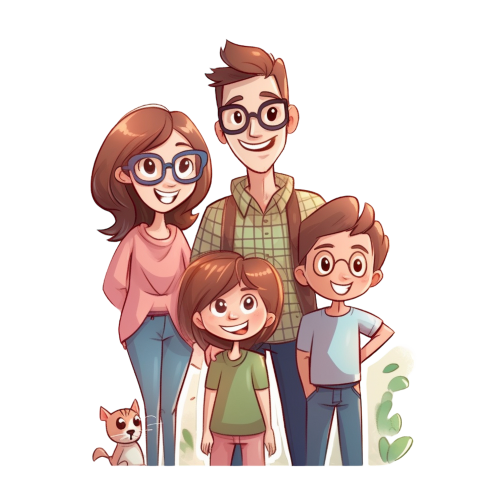

Gaming

Seit ich ein kleines Kind bin, habe ich Videospiele gespielt. Sie waren ein Großteil meiner Kindheit und dazu meine einzige Beschäftigung im Alltag. Manchmal hätte ich mir gewünscht, dass meine Mutter mich besser erzieht.
Jedoch blicke ich gern zu den alten Zeiten zurück. Ich habe meist Minecraft oder Roblox gespielt, als ich ein kleines Kind war. Bis heute spiele ich Videospiele, jedoch habe ich auch andere Hobbys.
Eldenring
Dieses Spiel habe ich nicht mal so lange. Ich besorgte mir das Spiel, als ich viel von meinem Freund darüber gehört hatte. Eine meiner besseren Entscheidungen im Leben.
Durch die Schwierigkeitsstufe konnte ich im echten Leben besser ruhig handeln.
Minecraft
Wie gesagt, ich kenne dieses Spiel seit meiner Kindheit. Es prägte meine Kreativität, obwohl ich kaum weiterkam im Spiel. Ich hatte auch oft Streit mit meinen Mitmenschen, wenn sie mal mitspielten.
Zeichnen

Ich hatte schon irgendwie eine Begabung dafür. Ich würde schon sagen, dass ich relativ gut bin im Zeichnen, jedoch sollte man trotzdem nicht übermütig werden.
Ich würde auch gern einen Beruf dazu haben, sehe aber keine Zukunft dafür.
Anatomie
In diesem Bereich zeichne ich am meisten, irgendwie beeindruckt mich der menschliche Körper. Dazu zeichne ich sie in Schwarz-Weiß. Ich habe viele Zeichnungsblöcke zu Hause.
Fotografie

Ich liebe die Fotografie. Das Gefühl, ein perfektes Bild zu machen, ist echt gut, dazu auch befriedigend. Ich habe erst seit einem halben Jahr angefangen mit einer professionellen Kamera.
Verwandtschaft
Bei gewissen Veranstaltungen oder Events benutze ich gern meine Kamera, um bestimmte Momente aufzunehmen. Ich fotografiere auch in der Wohnung oder drehe Videos mit der Videofunktion.
Programmierung
Vor so ein halbes Jahr hab ich angefangen zum ersten mal zu programmieren. Ich fands schwer und musste viele Tutorials ansehen.
meine erste Website
Meine erste Website war ein quiz, der bis heute nicht fertig ist. Da hab ich auch zum ersten mal javascript verwendet.
Den javascript Code hab ich eigentlich nur vom tutorial übernommen. Ich fand überhaupt die Motivation weil ich einfach die Technologie interessant finde.
Tools und diese Website
Ich habe eine Software benutzt wo coden leichter war als bei Notepad. Dazu gab es an ob der code funktsoniert. Diese Website war die erste wo ich allein mit einen tutorial und notepad arbeite. Vorher habe ich mehr professionellere Editoren benutzt
Familie
Ich habe eine Schwester und sie ist 19. Meine beiden Elternteile sind getrennt. Ich hab ein Hund namens keks.
Über mich
Ich bin 16 jahre alt und lebe in der lilo-Hermann Straße 1 nr. 14. Ich habe am 30.04 geburtstag.